Once you have an app deployed in OpenShift you can take advantage of some continuous capabilities that help to enable DevOps and automate your management process. We will cover some of those in this lab: Build triggers, webhooks, and rollbacks.
We are going to do some integration and coding with an external git repository. For this lab we are going to use github, if you don't already have an account, you can create one here.
OK, let's fork the dc-metro-map app from my account into your github account. Goto https://github.com/RedHatGov/openshift-workshops and look to the top right for the "Fork" button.
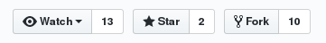
Click the "Fork" button
Github should redirect you to the newly created fork of the source code.
When using S2I there are a few different things that can be used to trigger a rebuild of your source code. The first is a configuration change, the second is an image change, and the last (which we are covering here) is a webhook. A webhook is basically your git source code repository telling OpenShift that the code we care about has changed. Let's set that up for our project now to see it in action.
Jump back to your OpenShift web console and let's add the webapp to our project. You should know how to do this from previous lab work, but this time point to your github URL for the source code. If you need a refresher expand the box below.
Click the "Add to Project" button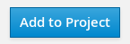
Select the "Browse Catalog" tab and search for the nodejs:0.10 builder image.
Fill out the boxes to point to the fork and context dir
Notes: You will need to click to expand the "advanced options"
The github repository URL is: https://github.com/YOUR_ACCOUNT/openshift-workshops.git
The github context-dir is: /dc-metro-map
The node.js builder template creates a number of resources for you, but what we care about right now is the build configuration because that contains the webhooks. So to get the URL:
Goto the terminal and type the following:
$ oc describe bc/dc-metro-map | grep -i webhook
Copy the Generic webhook to the clipboard
Click on "Builds" and then click on "Builds"This is going to show basic details for all build configurations in this project 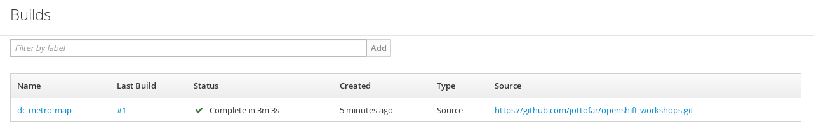
Click the "dc-metro-map" build configYou will see the summary of builds using this build config 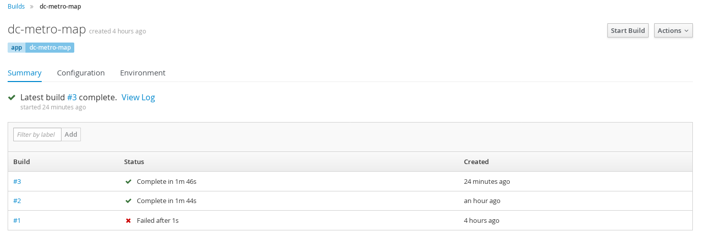
Click the "Configuration" tab (next to the active Summary tab)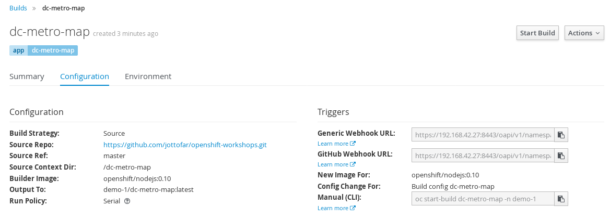
Copy the Generic webhook to the clipboard
Now switch back over to github
Let's put the webhook URL into the repository. At the main page for this repository (the fork), you should see a tab bar with code, pull requests, pulse, graphs, and settings.
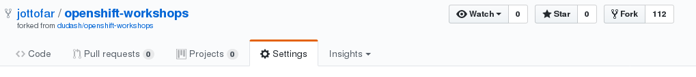
Click the "Settings" tab
Now you will see a vertical list of settings groups.
Click the "Webhooks & services" item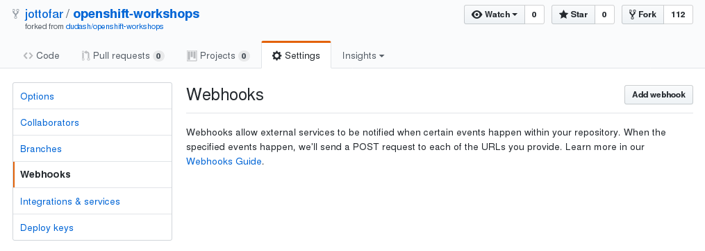
Click the "Add webhook" button
Paste in the URL you copied
Disable SSL verification by clicking the button
You can learn how to setup SSL in the secrets lab
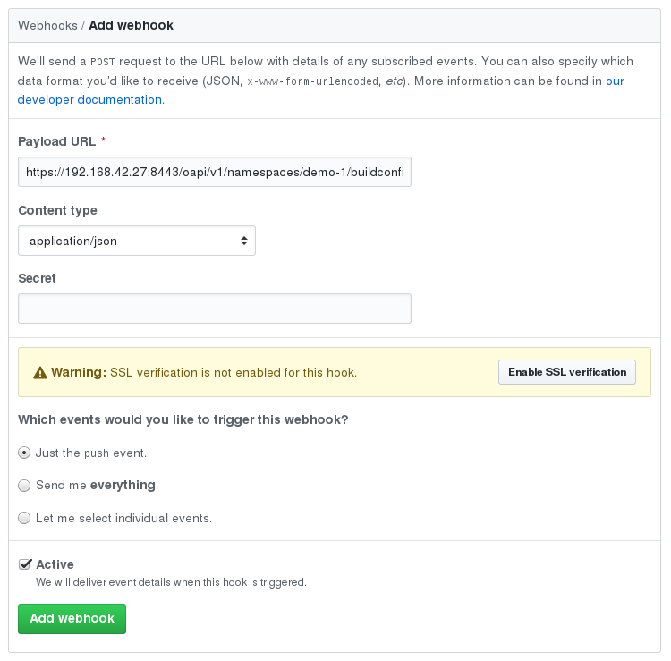
Click the "Add webhook" button
Good work! Now any "push" to the forked repository will send a webhook that triggers OpenShift to: re-build the code and image using s2i, and then perform a new pod deployment. In fact Github should have sent a test trigger and OpenShift should have kicked off a new build already.
In addition to setting up triggers for rebuilding code, we can setup a different type of trigger to deploy pods. Deployment triggers can be due to a configuration change (e.g. environment variables) or due to an image change. This powerful feature will be covered in one of the advanced labs. See the Triggers link under More Information below.
Well, what if something isn't quite right with the latest version of our app? Let's say some feature we thought was ready for the world really isn't - and we didn't figure that out until after we deployed it. No problem, we can roll it back with the click of a button. Let's check that out:
Goto the terminal and type the following:
$ oc rollback dc-metro-map-1
$ oc get pods -w
Click on "Applications" and then click on "Deployments"This is going to show basic details for all deployment configurations in this project
Click the "dc-metro-map" deployment configToward the bottom of the screen you will see a table of deployments using this deployment config 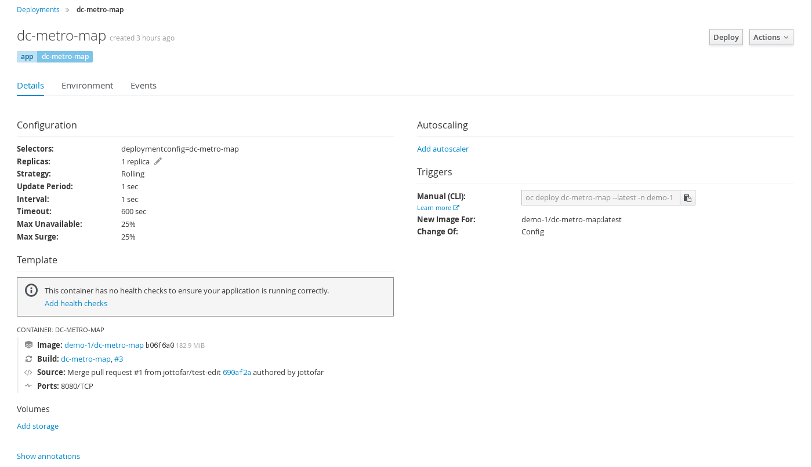
In the Deployments table click the #1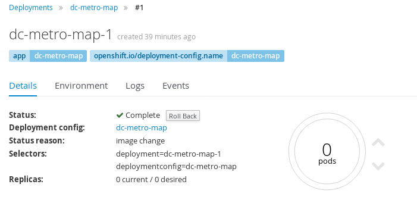
Click the "Rollback button", accept defaults, and click "Rollback" again
You can go back to the overview page to see your previous deployment spinning down and your new one spinning up.
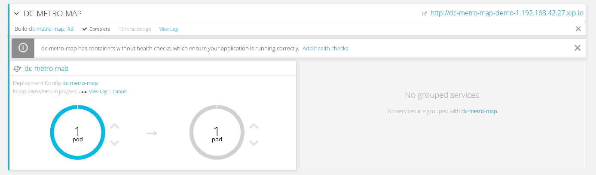
OpenShift has done a graceful removal of the old pod and created a new one.
Note that the old pod wasn't killed until the new pod was successfully started and ready to be used. This is so that OpenShift could continue to route traffic to the old pod until the new one was ready.
You can integrate your CI/CD tools to do rollbacks with the REST API. See the Rollbacks With the REST API link under More Information below.
In this lab we saw how you can configure a source code repository to trigger builds with webhooks. This webhook could come from Github, Jenkins, Travis-CI, or any tool capable of sending a URL POST. Keep in mind that there are other types of build triggers you can setup. For example: if a new version of the upstream RHEL image changes. We also inspected our deployment history and did a rollback of our running deployment to one based on an older image with the click of a button.